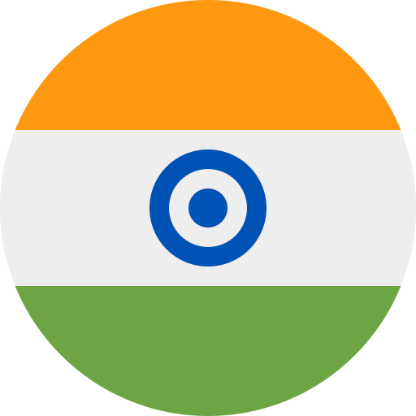

Ranking
Qualification ranking by recorded seed; this is not final tournament placement. Scores are shown exactly as recorded.
| Seed | Player | Country | Recorded scores | Status |
|---|---|---|---|---|
| 1 | Tolstoj | 2,000, 222,133, 402,290, 502,668, 623,653 | ||
| 2 | Toni | 43,600, 106,448, 256,195, 600,393 | ||
| 3 | Pascal | 0, 1,000, 12,184, 439,949, 440,033, 561,295 | ||
| 4 | Miiirps | 249,715, 292,947, 461,835 | ||
| 5 | Andy | 226,917 | ||
| 6 | Johanna | 214,220 | ||
| 7 | Mirjam | 98,290, 145,331 | ||
| 8 | Meret | 68,053, 106,342 | ||
| 9 | Hannes | 70,487, 80,594 | ||
| 10 | Phil | 80,000 | ||
| 11 | Pasqual | 14,766, 19,652, 48,434 | ||
| 12 | Matt | 47,478 | ||
| 13 | Max | 46,954 | ||
| 14 | Patric | 44,454 | ||
| 15 | Dana | 39,930 | ||
| 16 | Luis | 27,962 | ||
| 17 | Elin | 26,793 | ||
| 18 | Celine | 25,698 | ||
| 19 | Omega | 1,214, 23,176 | ||
| 20 | Kovid |  | 22,466 | |
| 21 | Mark | 17,766 | ||
| 22 | Beni | 17,045 | ||
| 23 | Vincent | 11,924 | ||
| 24 | Toby | 11,405 | ||
| 25 | Patrik | 9,214 | ||
| 26 | Fabian | 8,313 | ||
| 27 | Lyos | 6,197 | ||
| 28 | Caro | 4,181 | ||
| 29 | Luan | 3,638 | ||
| 30 | Tim | 2,257, 3,628 | ||
| 31 | Marvin | 2,820, 3,459 | ||
| 32 | Kristian | 2,621 | ||
| 33 | Elia | 2,304 | ||
| 34 | Samir | 1,811 | ||
| 35 | Kavish | 1,800 | ||
| 36 | Ender | 1,735 | ||
| 37 | Giulia | 1,485 | ||
| 38 | Cedric | 1,213 | ||
| 39 | Zoran | 356 | ||
| 40 | Estelle | 240 | ||
| 41 | Silas | 111 | ||
| 42 | Gregory | 48 | ||
| 43 | Marlon | — |
Bracket & results
No bracket matches were available in this snapshot.